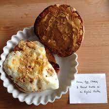

Z-Town's Breakfast Sandwich

A Z-Town Classic
This protein packed egg sandwich is simple and delicious.
Ingredients
- 1 egg
- 1 bagel cut in half or your preffered bread
- 2 strips of bacon
- 1 slice havarti cheese
- peanut butter
- salt
- pepper
- smoked paprika
- hot sauce of choice
Directions
- Heat pan over medium-high heat, place bacon on pan and cook to desired cripness.
- Remove bacon and allow pan to cool down if necessary. Crack egg into pan with the bacon fat being careful not to break the yolk.
- Season egg with salt, pepper and smoked paprika. Once egg white as cooked through most of the way, flip egg and remove from heat.
- Toast bagel and melt havarti over the bottom half. Spread peanut putter to the top half.
- Assemble sandwich
- Place bacon on bottom half of bagel with the melted havarti.
- Place egg ontop of bacon
- Add hot sauce of choice (I like using something VERY hot such as a ghost pepper sauce as it pairs well with the creaminess of the peanut butter).
- Put the top on!
- EAT!
- FREAK OUT!